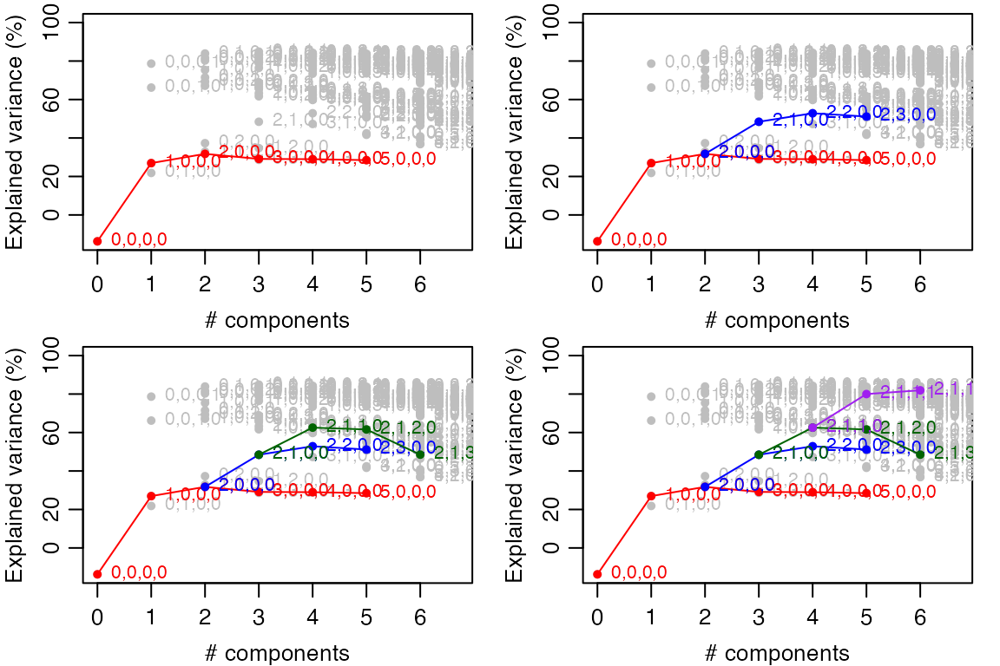
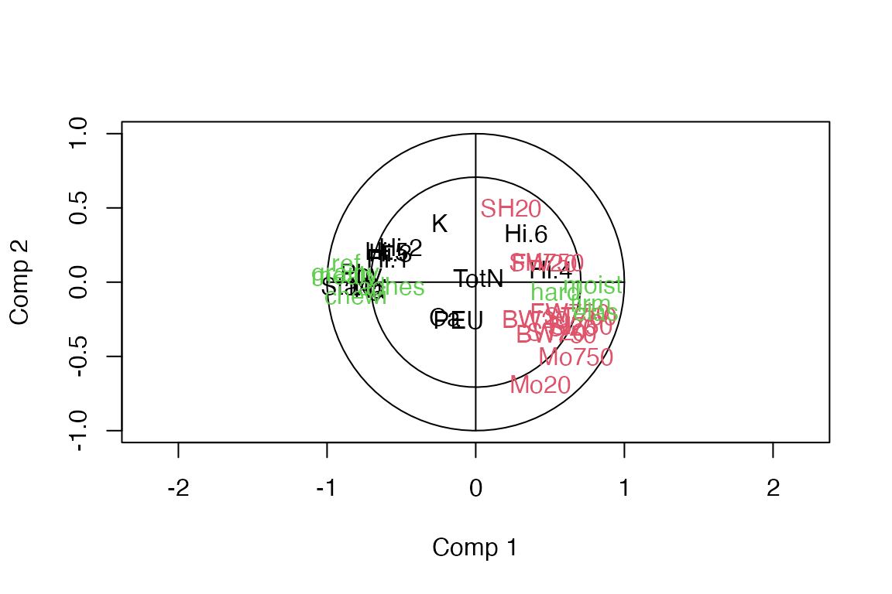

E. Supervised multiblock analysis
Source:vignettes/vignette_E_supervised.Rmd
vignette_E_supervised.Rmd
library(multiblock)
#> Registered S3 methods overwritten by 'lme4':
#> method from
#> cooks.distance.influence.merMod car
#> influence.merMod car
#> dfbeta.influence.merMod car
#> dfbetas.influence.merMod car
#> Registered S3 methods overwritten by 'multiblock':
#> method from
#> print.multiblock ade4
#> summary.multiblock ade4
#>
#> Attaching package: 'multiblock'
#> The following object is masked from 'package:stats':
#>
#> loadingsSupervised methods
The following supervised methods are available in the multiblock package (function names in parentheses):
- MB-PLS - Multiblock Partial Least Squares (mbpls)
- SO-PLS - Sequential and Orthogonalised PLS (sopls)
- PO-PLS - Parallel and Orthogonalised PLS (popls)
- ROSA - Response Oriented Sequential Alternation (rosa)
- mbRDA - Multiblock Redundancy Analysis (mbrda)
The following sections will describe how to format your data for analysis and invoke all methods from the list above.
Formatting data for multiblock analyses
Data blocks are best stored as named lists for use with the formula interface of R. The following is an example with sample data in one data block and one response block.
# Random data
n <- 30; p <- 90
X <- matrix(rnorm(n*p), nrow=n)
y <- X %*% rnorm(p) + 10
# Split X into three blocks in a named list
ABC <- list(A = X[,1:20], B = X[,21:50], C = X[,51:90], y = y)
# Model using names of blocks (see below for full SO-PLS example)
so.abc <- sopls(y ~ A + B + C, data = ABC, ncomp = c(4,3,4))Multiblock Partial Least Squares - MB-PLS
Multiblock PLS is presented briefly using the potato data.
Modelling
A multi-response two-block MB-PLS model with up to 10 components in total is cross-validated with 10 random segments.
data(potato)
mb <- mbpls(potato[c('Chemical','Compression')], potato[['Sensory']], ncomp = 10,
max_comps=10, validation="CV", segments=10)
print(mb)
#> Multiblock PLS
#>
#> Call:
#> mbpls(X = potato[c("Chemical", "Compression")], Y = potato[["Sensory"]], ncomp = 10, max_comps = 10, validation = "CV", segments = 10)Summaries and plotting
MB-PLS is implemented as a block-wise weighted concatenated ordinary PLSR. Therefore, all methods available for plsr are available for the global part of the MB-PL. In addition one can extrac blockScores and blockLoadings.
Pb2 <- loadings(mb, block=2)
loadingplot(mb, block = 1, labels = "names")Sequential and orthogonalised PLS - SO-PLS
The following example uses the potato data to showcase some of the functions available for SO-PLS analyses.
Modelling
A multi-response two-block SO-PLS model with up to 10 components in total is cross-validated with 10 random segments.
# Load potato data and fit SO-PLS model
so.pot <- sopls(Sensory ~ Chemical + Compression, data=potato,
ncomp=c(10,10), max_comps=10, validation="CV", segments=10)
print(so.pot)
#> Sequential and Orthogonalized Partial Least Squares, fitted with the PKPLS algorithm.
#> Cross-validated using 10 random segments.
#> Call:
#> sopls(formula = Sensory ~ Chemical + Compression, ncomp = c(10, 10), max_comps = 10, data = potato, validation = "CV", segments = 10)
summary(so.pot)
#> Data: X dimension: 26 0
#> Y dimension: 26 9
#> Fit method: PKPLS
#> Number of components considered: 10
#>
#> VALIDATION: RMSEP
#> Cross-validated using 10 random segments.
#> 0,0 0,1 0,2 0,3 0,4 0,5 0,6 0,7 0,8 0,9
#> 1.1472 0.9974 1.1034 0.9942 1.0159 1.1523 1.0857 1.1834 1.2494 1.3022
#> 0,10 1,0 1,1 1,2 1,3 1,4 1,5 1,6 1,7 1,8
#> 1.2690 0.9058 0.8860 0.9779 0.9029 0.8942 0.9320 0.9441 1.0542 1.1243
#> 1,9 2,0 2,1 2,2 2,3 2,4 2,5 2,6 2,7 2,8
#> 1.1369 0.8077 0.7023 0.7124 0.7737 0.8072 0.8651 0.8511 0.9742 1.0048
#> 3,0 3,1 3,2 3,3 3,4 3,5 3,6 3,7 4,0 4,1
#> 0.7439 0.7275 0.7111 0.7716 0.8322 0.8846 0.8893 0.9793 0.7494 0.7165
#> 4,2 4,3 4,4 4,5 4,6 5,0 5,1 5,2 5,3 5,4
#> 0.7272 0.7748 0.8135 0.9157 0.9001 0.7752 0.7491 0.7593 0.8494 0.9693
#> 5,5 6,0 6,1 6,2 6,3 6,4 7,0 7,1 7,2 7,3
#> 1.0306 0.8504 0.8438 0.8198 0.9304 1.0222 0.8997 0.8910 0.8418 0.9632
#> 8,0 8,1 8,2 9,0 9,1 10,0
#> 1.0062 1.0033 0.9511 1.0682 1.0557 1.6371
#>
#> TRAINING: % variance explained
#> 0,0 0,1 0,2 0,3 0,4 0,5 0,6 0,7 0,8 0,9
#> X 0 45.87 55.51 62.90 66.46 67.73 74.95 78.26 79.85 82.39
#> ref 0 42.19 54.73 65.01 66.85 73.96 74.10 74.44 77.45 77.57
#> hard 0 39.11 41.97 42.23 43.80 50.95 54.87 56.78 59.50 74.53
#> firm 0 42.55 57.44 59.44 61.06 66.78 68.62 69.02 71.34 76.53
#> elas 0 38.64 65.31 73.51 75.63 77.23 79.25 81.19 83.71 86.57
#> adhes 0 16.13 18.11 26.71 26.74 29.70 42.07 44.57 46.47 46.54
#> grainy 0 23.21 43.78 62.23 64.02 67.18 67.72 69.83 74.79 74.79
#> mealy 0 35.35 41.99 57.36 58.84 67.17 70.33 73.21 77.77 78.88
#> moist 0 24.48 27.71 43.10 44.27 48.41 53.39 62.37 67.60 74.79
#> chewi 0 21.98 22.78 48.17 55.50 59.96 68.39 72.54 76.39 77.42
#> 0,10 1,0 1,1 1,2 1,3 1,4 1,5 1,6 1,7 1,8
#> X 83.18 34.20 64.12 71.71 76.24 78.20 79.49 83.37 84.42 85.59
#> ref 77.57 55.79 64.00 64.25 73.75 77.39 79.53 80.42 80.50 80.96
#> hard 75.43 24.10 41.42 44.05 44.07 44.09 47.61 53.70 53.86 62.46
#> firm 79.31 42.73 54.16 58.42 62.05 63.55 64.91 70.85 70.91 70.93
#> elas 88.14 53.24 59.32 63.95 71.43 74.51 75.33 77.16 78.86 78.88
#> adhes 54.68 17.49 22.70 33.54 33.75 34.70 34.90 39.43 48.51 48.92
#> grainy 74.82 57.69 58.26 58.39 71.89 75.95 76.07 76.72 77.73 79.00
#> mealy 79.25 61.37 65.64 66.70 74.33 75.36 77.44 78.35 79.55 80.15
#> moist 77.22 57.32 58.51 62.12 66.20 66.35 67.13 67.14 69.51 71.02
#> chewi 81.68 53.27 54.25 64.22 66.35 69.59 69.96 72.80 77.64 77.64
#> 1,9 2,0 2,1 2,2 2,3 2,4 2,5 2,6 2,7 2,8
#> X 86.07 42.76 72.61 79.40 81.41 82.69 84.98 88.16 88.87 89.84
#> ref 81.20 76.03 85.17 87.21 89.03 90.67 90.68 91.36 91.36 91.39
#> hard 69.98 25.29 44.10 46.63 46.63 46.88 52.03 61.89 64.48 73.84
#> firm 80.21 55.93 69.19 76.45 76.45 76.80 77.79 82.58 82.64 86.03
#> elas 87.63 63.10 70.21 78.03 78.08 78.17 80.37 82.19 84.54 85.69
#> adhes 49.97 34.43 39.48 46.70 46.78 48.48 54.50 56.16 67.45 72.74
#> grainy 79.50 83.95 84.78 87.19 88.01 88.56 89.28 89.29 89.30 89.49
#> mealy 80.19 81.14 85.67 85.68 87.94 88.28 88.57 89.15 89.69 90.49
#> moist 72.44 67.94 69.06 70.49 72.51 72.53 72.61 72.80 73.61 78.69
#> chewi 78.05 70.55 71.41 77.11 77.11 78.09 78.17 79.79 83.27 86.51
#> 3,0 3,1 3,2 3,3 3,4 3,5 3,6 3,7 4,0 4,1
#> X 63.76 78.59 84.55 86.77 87.73 90.09 91.81 92.46 70.09 80.35
#> ref 84.50 86.31 87.91 89.34 91.72 91.74 93.12 93.13 84.91 87.28
#> hard 29.51 45.43 50.00 50.23 51.56 54.69 61.12 63.12 30.80 49.39
#> firm 62.42 68.64 76.93 76.96 77.84 78.25 82.67 82.72 62.64 73.46
#> elas 69.44 70.75 78.04 78.06 78.07 80.60 82.75 85.36 69.94 73.16
#> adhes 34.51 46.88 50.83 51.04 51.60 57.45 58.26 69.10 64.76 65.66
#> grainy 87.18 87.45 88.87 89.86 90.34 91.06 91.37 91.45 87.20 87.21
#> mealy 84.89 86.14 86.18 88.32 89.25 89.48 91.02 91.95 88.83 88.96
#> moist 70.03 70.05 72.13 74.57 74.71 74.88 74.97 76.40 75.09 76.33
#> chewi 70.56 72.61 77.34 77.39 78.58 78.58 79.89 83.77 82.06 82.29
#> 4,2 4,3 4,4 4,5 4,6 5,0 5,1 5,2 5,3 5,4
#> X 87.12 88.89 89.78 92.03 93.37 75.21 84.27 91.16 92.52 93.47
#> ref 88.13 89.65 92.48 92.54 93.63 85.03 88.23 89.16 90.27 92.85
#> hard 49.95 50.65 50.76 54.96 60.99 41.38 53.88 54.08 54.33 54.70
#> firm 77.00 77.10 77.44 78.23 83.34 68.24 75.97 78.78 78.78 79.40
#> elas 78.98 79.09 79.43 82.78 83.85 72.35 74.56 79.87 80.48 80.91
#> adhes 67.28 68.26 69.21 70.41 70.90 64.77 65.81 67.35 67.83 69.01
#> grainy 89.07 90.46 91.63 92.15 92.30 87.53 87.56 89.67 90.98 91.93
#> mealy 88.99 93.13 94.52 94.64 95.00 89.21 89.65 89.73 93.45 94.51
#> moist 76.60 82.33 82.90 82.90 83.28 79.72 79.91 79.98 83.86 84.08
#> chewi 84.08 84.45 86.24 86.38 86.39 82.11 82.31 83.97 84.76 86.45
#> 5,5 6,0 6,1 6,2 6,3 6,4 7,0 7,1 7,2 7,3
#> X 95.40 77.28 86.22 93.18 94.55 95.63 79.57 88.43 95.46 96.65
#> ref 92.91 86.80 90.43 91.47 92.26 94.07 88.07 91.60 92.62 92.70
#> hard 60.53 45.27 56.94 57.05 57.64 59.71 45.28 56.91 56.99 57.22
#> firm 80.75 68.98 76.56 79.17 79.42 80.55 69.02 76.72 79.16 79.35
#> elas 83.34 72.55 74.96 80.08 80.15 80.26 73.76 76.39 81.36 81.61
#> adhes 70.53 64.77 65.79 67.29 69.17 69.37 65.04 65.96 67.53 68.89
#> grainy 92.38 91.29 91.41 93.80 94.06 94.27 91.78 91.89 94.29 94.34
#> mealy 94.83 90.67 91.24 91.36 94.83 95.44 92.38 92.87 92.98 94.77
#> moist 84.08 82.80 82.90 82.93 85.65 85.67 85.12 85.26 85.29 86.55
#> chewi 86.50 84.60 84.72 86.16 86.49 87.50 86.05 86.22 87.61 87.62
#> 8,0 8,1 8,2 9,0 9,1 10,0
#> X 82.82 88.16 95.96 85.49 90.21 87.08
#> ref 90.82 94.67 94.93 91.52 94.42 91.79
#> hard 52.73 59.90 60.33 52.75 63.37 52.92
#> firm 71.26 80.42 80.49 71.81 80.88 71.82
#> elas 73.78 80.71 81.41 75.22 80.15 76.14
#> adhes 68.88 68.89 69.28 71.74 72.73 74.17
#> grainy 91.80 93.21 94.39 91.99 92.91 92.43
#> mealy 93.59 94.05 94.31 93.75 93.98 93.83
#> moist 86.40 86.60 87.34 87.11 88.40 87.14
#> chewi 87.11 88.40 88.43 87.27 89.53 87.28Måge plot
Full Måge plot for all combinations of components for all blocks. This can be used for a global search for the best fitting cross-validated model.
Each point in the figure below is accompanied by a sequence of four numbers referring to the number of components used for each of the four blocks. Horizontal location is given by the total number of components used across all blocks, while vertical location indicates validated explained variance in percentage.
# Load Wine data and model with SO-PLS
data(wine)
ncomp <- unlist(lapply(wine, ncol))[-5]
so.wine <- sopls(`Global quality` ~ ., data=wine, ncomp=ncomp,
max_comps=6, validation="CV", segments=10)
maage(so.wine)A sequential Måge plot can be used for a sequential search for the optimal model.
# Sequential search for optimal number of components per block
old.par <- par(mfrow=c(2,2), mar=c(3,3,0.5,1), mgp=c(2,0.7,0))
maageSeq(so.wine)
maageSeq(so.wine, 2)
maageSeq(so.wine, c(2,1))
maageSeq(so.wine, c(2,1,1))
par(old.par)Loadings
One set of loadings is printed and two sets are plotted to show how to select specific components from specific blocks.
# Display loadings for first block
loadings(so.pot, block = 1)
#>
#> Loadings:
#> 1,0 2,0 3,0 4,0 5,0 6,0 7,0 8,0 9,0
#> ChemicalPEU 0.645 -3.672 1.197 2.277 -0.589 -1.684 1.028 0.431 0.118
#> ChemicalSta. -4.542 -0.975 -0.984 -0.678 -0.559 -0.926 -0.418 -0.583 0.508
#> ChemicalTotN 0.478 -1.848 3.046 -1.613 1.604 -1.088 1.441 0.355 -1.874
#> ChemicalPhy. -3.970 -1.445 0.948 1.148 -0.286 1.519 -0.669 0.233
#> ChemicalCa -1.365 -0.982 1.804 -1.190 -3.763 1.249 0.107 0.281 -0.401
#> ChemicalMg -4.009 -0.280 -2.344 0.996 -0.320 1.152 0.172 0.801
#> ChemicalNa -3.066 -2.488 0.669 1.616 -1.119 1.520 -0.570 -0.430 -0.452
#> ChemicalK -0.186 -0.255 -4.161 0.149 0.700 1.225 -1.469 1.284 -1.263
#> ChemicalHi.1 -4.493 2.113 0.344 -0.226 -0.126 0.108 -0.154
#> ChemicalHi.2 -4.099 2.656 -0.739 0.488 -0.311 -0.225 0.135 0.120 -0.254
#> ChemicalHi.3 -4.382 2.270 -0.259 0.398 -0.272 -0.271 0.105 0.337 -0.369
#> ChemicalHi.4 3.000 0.732 -2.855 -1.994 -0.483 1.552 -0.173 -0.200
#> ChemicalHi.5 -4.419 2.023 -0.177 0.372 -0.362 -0.359 0.192 0.494 -0.668
#> ChemicalHi.6 1.580 2.266 -3.570 0.571 -1.131 -0.664 1.351 -0.390 -0.371
#> 10,0
#> ChemicalPEU -0.132
#> ChemicalSta. 0.220
#> ChemicalTotN
#> ChemicalPhy. -1.415
#> ChemicalCa -1.229
#> ChemicalMg 0.481
#> ChemicalNa 1.440
#> ChemicalK -0.411
#> ChemicalHi.1 0.162
#> ChemicalHi.2 0.146
#> ChemicalHi.3
#> ChemicalHi.4 0.528
#> ChemicalHi.5
#> ChemicalHi.6 0.279
#>
#> 1,0 2,0 3,0 4,0 5,0 6,0 7,0 8,0 9,0
#> SS loadings 151.624 51.586 56.326 19.671 27.054 11.370 13.749 3.605 7.288
#> Proportion Var 10.830 3.685 4.023 1.405 1.932 0.812 0.982 0.257 0.521
#> Cumulative Var 10.830 14.515 18.538 19.943 21.876 22.688 23.670 23.927 24.448
#> 10,0
#> SS loadings 6.470
#> Proportion Var 0.462
#> Cumulative Var 24.910
# Plot loadings from block 1 and 2
old.par <- par(mfrow=c(1,2))
loadingplot(so.pot, comps = c(2,3), block = 1, main = "Block 1", labels = "names", cex = 0.8)
loadingplot(so.pot, ncomp = 4, block = 2, main = "Block 2", labels = "names", cex = 0.8)
par(old.par)Scores
One set of scores is printed and two sets are plotted to show how to select specific components from specific blocks.
# Display scores for first block
scores(so.pot, block = 1)
#> 1,0 2,0 3,0 4,0 5,0 6,0
#> 1 -0.078379126 -0.15756558 -0.030150796 -0.08882899 -0.01376296 -0.056671801
#> 2 0.033599245 0.03345139 -0.264837392 -0.02082345 -0.11717078 -0.151392736
#> 3 -0.454087240 -0.50387774 -0.257625630 0.24822188 -0.02903093 -0.086528935
#> 4 -0.010144029 0.04409907 0.254739277 0.34206013 0.02495265 0.074552441
#> 5 -0.231320589 0.02813994 0.331647163 -0.15209020 -0.75827354 0.341572360
#> 6 -0.100806072 -0.03203490 0.058511494 -0.07824489 -0.03272086 0.022355259
#> 7 0.103759602 0.05587580 0.171495995 0.13245956 -0.01979756 -0.159062060
#> 8 0.142341829 -0.02952316 0.135315864 0.17766566 -0.04381490 -0.186272842
#> 9 0.160175421 -0.13395363 0.067732083 -0.34567441 0.17107748 0.172779015
#> 10 0.078862890 -0.20282246 0.065251294 -0.21205811 0.20044571 0.328237338
#> 11 0.200245777 -0.02882659 0.149667777 -0.08872396 -0.08768916 -0.174332305
#> 12 0.223602068 -0.07321286 -0.029748834 -0.22950703 -0.03709102 -0.193124707
#> 13 0.217320106 -0.26815383 0.096949900 -0.10070260 0.05733144 -0.253089620
#> 14 0.142847549 -0.29951537 0.077252287 0.24996525 -0.11362892 -0.187257376
#> 15 0.213820293 0.17228886 -0.461863019 -0.11767172 -0.27195381 -0.069378444
#> 16 0.164964325 0.26005269 -0.323577542 0.10235857 -0.18083698 0.028860577
#> 17 0.002967383 0.19480792 -0.246885356 0.19701818 0.05083294 0.193040181
#> 18 0.066258347 0.09356886 -0.228532411 0.20484080 0.06435515 0.193713440
#> 19 0.194213760 -0.01568159 0.132000297 0.14447620 0.07380230 0.134307084
#> 20 0.141301554 -0.07654188 0.049224760 0.26084474 0.16978368 0.406994445
#> 21 -0.129888279 0.04471652 0.038982799 -0.30565064 0.07729299 -0.272193959
#> 22 -0.105636544 0.24576605 -0.030041538 -0.14535670 0.24832087 0.010288729
#> 23 -0.464479945 -0.11433433 -0.194275154 -0.06714686 0.13063332 -0.005785022
#> 24 -0.082441922 0.22751259 0.233417343 0.13675311 0.22568931 -0.091378804
#> 25 -0.325181587 0.44765983 0.208213841 0.07217114 0.05115869 -0.267361478
#> 26 -0.103914818 0.08810440 -0.002864502 -0.31635566 0.16009487 0.247129222
#> 7,0 8,0 9,0 10,0
#> 1 -0.170176673 -0.353657625 0.09144069 -0.188197767
#> 2 0.376363608 -0.223166913 -0.06432803 0.102154561
#> 3 0.053642203 0.053088656 0.11136825 0.089274658
#> 4 0.080021975 -0.455836399 0.29151166 0.160435908
#> 5 0.060316124 0.088814534 -0.01259842 -0.241887363
#> 6 -0.143868448 0.209487156 0.44247087 0.460290223
#> 7 -0.067499572 0.172789197 -0.01007070 0.014280187
#> 8 0.003023123 0.020901351 -0.15855793 0.115799243
#> 9 0.099124600 0.077168263 -0.22926057 0.020019625
#> 10 -0.006546077 0.001048562 -0.15821313 0.090958585
#> 11 -0.321845257 -0.388050068 -0.15769574 0.033224651
#> 12 -0.114302438 -0.157344716 0.01456158 -0.118230072
#> 13 0.159102296 0.426179096 0.31221443 -0.244022144
#> 14 0.164565349 0.160117465 -0.31148972 0.004138940
#> 15 0.160269738 -0.034424824 0.04760954 0.177518448
#> 16 0.073035199 0.028396505 0.02512587 0.008674474
#> 17 -0.336494502 0.228154141 -0.02760929 -0.191196309
#> 18 -0.353315626 0.070825686 0.13990043 -0.255631862
#> 19 -0.192020302 0.118534017 -0.05488875 0.206887988
#> 20 0.167499146 -0.065961803 -0.17176149 -0.018385084
#> 21 -0.291917226 -0.005778312 0.06774798 -0.093267865
#> 22 0.315505112 0.055322691 -0.04212437 -0.272120565
#> 23 -0.070388026 -0.103937894 -0.28625584 -0.102958571
#> 24 0.271169417 -0.112282869 0.28534458 -0.337006550
#> 25 -0.033293058 0.199555988 -0.33284978 0.259557484
#> 26 0.118029313 -0.009941885 0.18840789 0.319689179
#> attr(,"explvar")
#> 1,0 2,0 3,0 4,0 5,0 6,0 7,0 8,0
#> 34.201725 8.556741 20.999993 6.330308 5.124745 2.071311 2.284023 3.250427
#> 9,0 10,0
#> 2.674759 1.582372
#> attr(,"class")
#> [1] "scores.multiblock" "scores"
# Plot scores from block 1 and 2
old.par <- par(mfrow=c(1,2))
scoreplot(so.pot, comps = c(2,3), block = 1, main = "Block 1", labels = "names")
scoreplot(so.pot, ncomp = 4, block = 2, main = "Block 2", labels = "names")
par(old.par)Prediction
A three block model is fitted using a single response, 5 components and a subset of the data. The remaining data are used as test set for prediction.
# Modify data to contain a single response
potato1 <- potato; potato1$Sensory <- potato1$Sensory[,1]
# Model 20 first objects with SO-PLS
so.pot20 <- sopls(Sensory ~ ., data = potato1[c(1:3,9)], ncomp = 5, subset = 1:20)
# Predict remaining objects
testset <- potato1[-(1:20),]; # testset$Sensory <- NULL
predict(so.pot20, testset, comps=c(2,1,2))
#> , , 1,0,0
#>
#> Sensory
#> [1,] 3.922829
#> [2,] 3.801854
#> [3,] 6.409450
#> [4,] 2.960830
#> [5,] 4.433857
#> [6,] 3.223006
#>
#> , , 2,0,0
#>
#> Sensory
#> [1,] 4.062985
#> [2,] 4.238679
#> [3,] 7.178207
#> [4,] 2.477011
#> [5,] 3.319856
#> [6,] 2.904183
#>
#> , , 2,1,0
#>
#> Sensory
#> [1,] 4.169790
#> [2,] 4.471989
#> [3,] 7.282654
#> [4,] 2.426714
#> [5,] 3.273465
#> [6,] 2.898753
#>
#> , , 2,1,1
#>
#> Sensory
#> [1,] 5.2214087
#> [2,] 5.1427034
#> [3,] 9.7861678
#> [4,] -0.7742392
#> [5,] 0.9645707
#> [6,] 2.2666501
#>
#> , , 2,1,2
#>
#> Sensory
#> [1,] 5.4727706
#> [2,] 5.5669734
#> [3,] 11.3237645
#> [4,] -2.3105720
#> [5,] 0.2755925
#> [6,] 2.1649361Validation
Compute validation statistics; explained variance - R\(^2\) and Root Mean Squared Error - RMSE(P/CV).
# Cross-validation
R2(so.pot, ncomp = c(5,5))
#> 1,0 2,0 3,0 4,0 5,0 5,1 5,2
#> 0.29491711 0.43937819 0.52443674 0.51731500 0.48356727 0.51769239 0.50453909
#> 5,3 5,4 5,5
#> 0.37995426 0.19264375 0.08718665
R2(so.pot, ncomp = c(5,5), individual = TRUE)
#> 1,0 2,0 3,0 4,0 5,0 5,1
#> ref 0.27825536 0.43256997 0.60854575 0.611650546 0.57962221 0.6410025
#> hard -0.01534472 -0.19976337 -0.32629673 -0.629670315 -0.73850234 -0.5385860
#> firm 0.11456699 0.11663849 0.14175670 -0.005647699 0.07172321 0.2173452
#> elas 0.32922325 0.39196816 0.41920590 0.347290927 0.35236475 0.3873415
#> adhes -0.04074410 0.02924686 -0.06114012 0.182892958 0.21626890 0.2398021
#> grainy 0.29892446 0.57657563 0.70726840 0.720648990 0.66998154 0.6426785
#> mealy 0.39732737 0.60662586 0.71089974 0.742956337 0.70442569 0.7074522
#> moist 0.42596297 0.55819542 0.60651611 0.602672591 0.54129827 0.5169465
#> chewi 0.38811017 0.58159817 0.56193588 0.643390275 0.56225915 0.5417198
#> 5,2 5,3 5,4 5,5
#> ref 0.6892006 0.64474046 0.66948387 0.69542145
#> hard -0.6078491 -1.37218409 -2.90610544 -4.13991040
#> firm 0.2464953 -0.01322888 -0.26416572 -0.69554952
#> elas 0.4649800 0.43158366 0.45223779 0.09663100
#> adhes 0.1548038 -0.06098741 -0.71470005 -1.01032999
#> grainy 0.6653825 0.67115458 0.67261140 0.75006427
#> mealy 0.6671254 0.62578581 0.60276444 0.67661249
#> moist 0.3843608 0.12290559 -0.34127485 -0.48130723
#> chewi 0.4645314 0.35373420 0.06156931 0.07770671
# Training
R2(so.pot, 'train', ncomp = c(5,5))
#> 1,0 2,0 3,0 4,0 5,0 5,1 5,2 5,3
#> 0.5321195 0.7063309 0.7545212 0.7890377 0.8065415 0.8303087 0.8419431 0.8603538
#> 5,4 5,5
#> 0.8735251 0.8807225
# Test data
R2(so.pot20, newdata = testset, ncomp = c(2,1,2))
#> 1,0,0 2,0,0 2,1,0 2,1,1 2,1,2
#> 0.5217279 0.7330829 0.7208834 0.4494703 -0.2607736
# Cross-validation
RMSEP(so.pot, ncomp = c(5,5))
#> 1,0 2,0 3,0 4,0 5,0 5,1 5,2 5,3
#> 0.9057837 0.8076801 0.7438897 0.7494390 0.7751956 0.7491460 0.7592925 0.8494079
#> 5,4 5,5
#> 0.9692527 1.0306125
RMSEP(so.pot, ncomp = c(5,5), individual = TRUE)
#> 1,0 2,0 3,0 4,0 5,0 5,1 5,2
#> ref 1.4521251 1.2875627 1.0694309 1.0651814 1.1082357 1.0241368 0.9529110
#> hard 0.7409166 0.8053977 0.8468041 0.9386690 0.9695054 0.9120602 0.9323634
#> firm 0.8153675 0.8144132 0.8027508 0.8689574 0.8348612 0.7665856 0.7521744
#> elas 0.5987744 0.5700821 0.5571669 0.5906552 0.5883550 0.5722469 0.5347604
#> adhes 0.6238669 0.6025240 0.6299503 0.5527890 0.5413816 0.5331916 0.5622102
#> grainy 0.9124005 0.7090731 0.5895734 0.5759413 0.6259969 0.6513774 0.6303437
#> mealy 1.1918516 0.9629070 0.8254784 0.7783679 0.8346700 0.8303858 0.8857717
#> moist 0.8218611 0.7210138 0.6804434 0.6837585 0.7346723 0.7539214 0.8511216
#> chewi 0.6207792 0.5133308 0.5252540 0.4739114 0.5250602 0.5372372 0.5807210
#> 5,3 5,4 5,5
#> ref 1.0187910 0.9826720 0.9433262
#> hard 1.1324963 1.4532307 1.6670183
#> firm 0.8722266 0.9742660 1.1283161
#> elas 0.5511978 0.5410909 0.6948752
#> adhes 0.6299050 0.8007815 0.8670689
#> grainy 0.6248834 0.6234977 0.5447751
#> mealy 0.9391643 0.9676215 0.8730579
#> moist 1.0159016 1.2562827 1.3202345
#> chewi 0.6379786 0.7687792 0.7621405
# Training
RMSEP(so.pot, 'train', ncomp = c(5,5))
#> 1,0 2,0 3,0 4,0 5,0 5,1 5,2 5,3
#> 0.7378564 0.5845659 0.5344553 0.4954580 0.4744585 0.4443592 0.4288556 0.4031058
#> 5,4 5,5
#> 0.3836247 0.3725492
# Test data
RMSEP(so.pot20, newdata = testset, ncomp = c(2,1,2))
#> 1,0,0 2,0,0 2,1,0 2,1,1 2,1,2
#> 1.562727 1.167438 1.193819 1.676625 2.537255Parallel and Orthgonalised Partial Least Squares - PO-PLS
PO-PLS is presented briefly using the potato data.
Modelling
There are many choices with regard to numbers of components and possible local and common components. Using automatic selection, the user selects the highest number of blocks to combine into local/common components, minimum explained variance and minimum squared correlation to the response. Manual selection is limited to setting the number of initial components from the blocks and maximum number of local/common components.
# Automatic analysis
pot.po.auto <- popls(potato[1:3], potato[['Sensory']][,1], commons = 2)
# Explained variance
pot.po.auto$explVar
#> $Chemical
#> named numeric(0)
#>
#> $Compression
#> C(1,2), Comp 1
#> 68.14595
#>
#> $NIRraw
#> named numeric(0)
# Manual choice of up to 5 components for each block and 1, 0, and 2 blocks,
# respectively from the (1,2), (1,3) and (2,3) combinations of blocks.
pot.po.man <- popls(potato[1:3], potato[['Sensory']][,1], commons = 2,
auto=FALSE, manual.par = list(ncomp=c(5,5,5),
ncommon=c(1,0,2)))
# Explained variance
pot.po.man$explVar
#> $Chemical
#> C(1,2), Comp 1 D(1), Comp 1 D(1), Comp 2 D(1), Comp 3
#> 32.22944 -72871.76265 -49467.54832 0.00000
#>
#> $Compression
#> C(1,2), Comp 1 C(2,3), Comp 1 C(2,3), Comp 2
#> 68.145954 5.504006 7.214911
#>
#> $NIRraw
#> C(2,3), Comp 1 C(2,3), Comp 2 D(3), Comp 1 D(3), Comp 2 D(3), Comp 3
#> 32.606459 5.475702 -552.399938 15.775647 3.303994
#> D(3), Comp 4
#> 0.000000Scores and loadings
Scores and loadings are stored per block. Common scores/loadings are found in each of the blocks’ list of components.
# Score plot for local (2,3) components
scoreplot(pot.po.man, block = 3, labels = "names")
# Corresponding loadings
loadingplot(pot.po.man, block = 3, labels="names", scatter = FALSE)
Response Oriented Sequential Alternation - ROSA
The following example uses the potato data to showcase some of the functions available for ROSA analyses.
Modelling
A multi-response two-block ROSA model with up to 10 components in total is cross-validated with 10 random segments.
# Model all eight potato blocks with ROSA
ros.pot <- rosa(Sensory ~ ., data = potato1, ncomp = 10, validation = "CV", segments = 5)
print(ros.pot)
#> Response Orinented Sequential Alternation , fitted with the CPPLS algorithm.
#> Cross-validated using 5 random segments.
#> Call:
#> rosa(formula = Sensory ~ ., ncomp = 10, data = potato1, validation = "CV", segments = 5)
summary(ros.pot)
#> Data: X dimension: 26 3946
#> Y dimension: 26 1
#> Fit method:
#> Number of components considered: 10
#>
#> VALIDATION: RMSEP
#> Cross-validated using 5 random segments.
#> (Intercept) 1 comps 2 comps 3 comps 4 comps 5 comps 6 comps
#> CV 1.778 1.066 0.9258 0.9068 0.8021 0.9775 1.097
#> adjCV 1.778 1.026 0.8888 0.8680 0.7769 0.9347 1.044
#> 7 comps 8 comps 9 comps 10 comps
#> CV 1.195 1.183 1.117 1.129
#> adjCV 1.139 1.135 1.081 1.095
#>
#> TRAINING: % variance explained
#> 1 comps 2 comps 3 comps 4 comps 5 comps 6 comps 7 comps 8 comps
#> X 27.82 72.05 82.50 83.10 84.88 87.09 87.24 88.46
#> Sensory 76.53 83.36 84.21 87.91 88.06 88.18 88.17 88.47
#> 9 comps 10 comps
#> X 91.18 92.81
#> Sensory 88.78 88.78Loadings
Extract loadings (not used further) and plot two first vectors of loadings.
loads <- loadings(ros.pot)
loadingplot(ros.pot, comps = 1:2)Prediction
A three block model is fitted using a single response, 5 components and a subset of the data. The remaining data are used as test set for prediction.
# Model 20 first objects of three potato blocks
rosT <- rosa(Sensory ~ ., data = potato1[c(1:3,9)], ncomp = 5, subset = 1:20)
testset <- potato1[-(1:20),]; # testset$Sensory <- NULL
predict(rosT, testset, comps=2)
#> Sensory
#> 21 2.2151098
#> 22 1.5123048
#> 23 2.3008727
#> 24 1.2001610
#> 25 0.8899352
#> 26 1.2181709Validation
Compute validation statistics; explained variance - R\(^2\) and Root Mean Squared Error - RMSE(P/CV).
# Cross-validation
R2(ros.pot)
#> (Intercept) 1 comps 2 comps 3 comps 4 comps 5 comps
#> -0.0816 0.6113 0.7066 0.7186 0.7798 0.6730
#> 6 comps 7 comps 8 comps 9 comps 10 comps
#> 0.5885 0.5114 0.5214 0.5728 0.5634
# Training
R2(ros.pot, 'train')
#> (Intercept) 1 comps 2 comps 3 comps 4 comps 5 comps
#> 0.0000 0.7653 0.8336 0.8421 0.8791 0.8806
#> 6 comps 7 comps 8 comps 9 comps 10 comps
#> 0.8818 0.8817 0.8847 0.8878 0.8878
# Test data
R2(rosT, 'test', newdata = testset)
#> (Intercept) 1 comps 2 comps 3 comps 4 comps 5 comps
#> -0.1609 0.3158 0.3289 0.4673 0.4634 0.4574
# Cross-validation
RMSEP(ros.pot)
#> (Intercept) 1 comps 2 comps 3 comps 4 comps 5 comps 6 comps
#> CV 1.778 1.066 0.9258 0.9068 0.8021 0.9775 1.097
#> adjCV 1.778 1.026 0.8888 0.8680 0.7769 0.9347 1.044
#> 7 comps 8 comps 9 comps 10 comps
#> CV 1.195 1.183 1.117 1.129
#> adjCV 1.139 1.135 1.081 1.095
# Training
RMSEP(ros.pot, 'train')
#> (Intercept) 1 comps 2 comps 3 comps 4 comps 5 comps
#> 1.7093 0.8280 0.6972 0.6792 0.5944 0.5906
#> 6 comps 7 comps 8 comps 9 comps 10 comps
#> 0.5877 0.5879 0.5805 0.5726 0.5726
# Test data
RMSEP(rosT, newdata = testset)
#> (Intercept) 1 comps 2 comps 3 comps 4 comps 5 comps
#> 2.435 1.869 1.851 1.649 1.655 1.664Image plots
These are plots for evaluation of the block selection process in ROSA. Correlation plots show how the different candidate scores (one candidate for each block for each component) correlate to the winning block’s scores. Residual response plots show how different choices of candidate scores would affect the RMSE of the residual response. One can for instance use these plots decide on a different block selection order than the one proposed automatically by ROSA.
# Correlation to winning scores
image(ros.pot)
# Residual response given candidate scores
image(ros.pot, "residual")Multiblock Redundancy Analysis - mbRDA
The following example uses the potato data to showcase some of the functions available for mbRDA analyses.
Modelling
This implementation uses a wrapper for the mbpcaiv function in the ade4 package to perform mbRDA. A multi-response 5 component model is fitted.
# Convert data.frame with AsIs objects to list of matrices
potatoList <- lapply(potato, unclass)
# Perform mbRDA with two blocks explaining sensory attributes
mbr <- mbrda(potatoList[c('Chemical','Compression')], potatoList[['Sensory']], ncomp = 5)
print(mbr)
#> Multiblock RDA
#>
#> Call:
#> mbrda(X = potatoList[c("Chemical", "Compression")], Y = potatoList[["Sensory"]], ncomp = 5)Loadings and scores
The mbpcaiv wrapper extracts key elements for inspection using the same format as the rest of this package. The full fitted mbpcaiv object is also available, e.g. through mbr$mbpcaivObject.
# Extract and view loadings
lo_mbr <- loadings(mbr)
#> Warning in loadings.multiblock(mbr): No global/consensus loadings available.
#> Returning block 1 loadings.
print(head(lo_mbr))
#> Comp 1 Comp 2 Comp 3 Comp 4 Comp 5
#> PEU -0.11801083 0.45883565 -1.7606202 -0.1936109 -2.3704052
#> Sta. 1.02113965 -2.99539512 1.4968283 4.6426038 -7.6478047
#> TotN 0.50084474 -1.40837541 1.0571404 1.8302797 -1.7127587
#> Phy. 0.24298763 0.27655908 0.3695837 0.4462580 -0.7461178
#> Ca 0.02050271 -0.04647818 0.1311656 0.6243666 -0.9713523
#> Mg -0.21159305 1.41437345 -0.6562877 -1.4166021 2.0111970
# Plot scores
scoreplot(mbr, labels = "names")